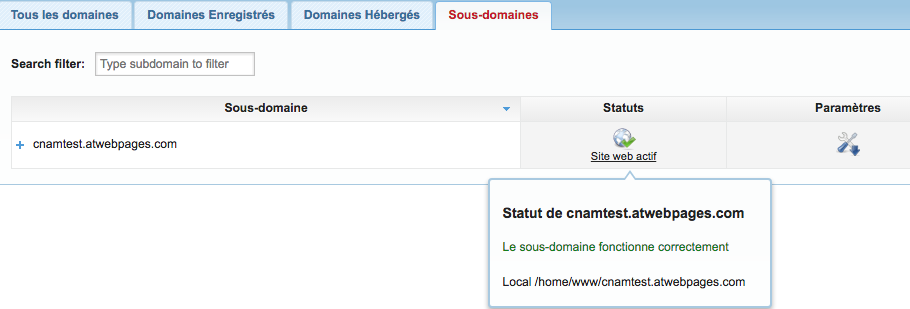
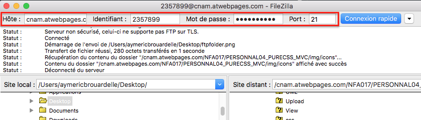
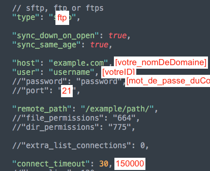
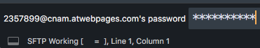
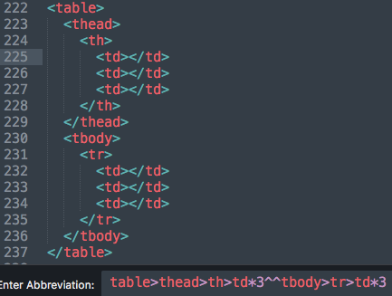
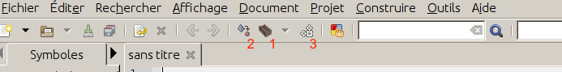

Cette rubrique va vous aider à mettre en place un hebergement web comprenant :
Le tout gratuitement et en acceptant la syntaxe des requetes SQL communes.
Alwaysdata va vous permettre lui la meme chose mais va accepter le protocole SSL. Par contre attention la syntaxe pour les requetes SQL sera plus stricte, notamment si vous suivez mon cours SQL vous aller avoir des problèmes d'erreur par rapport à la casse ou au virgules encadrant les tables et attributs. Toutefois alwaysdata va permettre de travailler pas seulement sur MySQL, mais aussi avec les SGBD suivants :
Rendez vous sur  awardspace.com > icone rouge customer en haut à droite puis signup. Créez votre compte comme indiqué ci-dessous
awardspace.com > icone rouge customer en haut à droite puis signup. Créez votre compte comme indiqué ci-dessous
Une fois crée, contrôlez la boite mail que vous avez renseigné. Confirmez le compte crée en cliquent sur le lien encadré en rouge.
vos identifiants de connexion apparaissent juste en dessous (client ID et login email)
Connectez vous desormais à votre hebergeur avec vos identifiants de connexion et mot de passe à  https://cp1.awardspace.net/beta/login/
https://cp1.awardspace.net/beta/login/
Rendez vous dans la rubrique  Outils avancés > Gestionnaire de bases de données. Créez votre base de donnée MySQL comme ci-dessous (PostgreSQL est un service payant ne pas aller sur cet onglet) :
Outils avancés > Gestionnaire de bases de données. Créez votre base de donnée MySQL comme ci-dessous (PostgreSQL est un service payant ne pas aller sur cet onglet) :
Rendez-vous dans  Gestionnaire du site web > Gestionnaire de domaine puis dans l'onglet 4 Créer un sous domaine gratuit
Gestionnaire du site web > Gestionnaire de domaine puis dans l'onglet 4 Créer un sous domaine gratuit
Votre sous domaine est immediatement opérationnel
Important : le protocole utilisé est http, pas https (sécurisé), ceci est un service payant, pas utile forcément pour vos premiers tests
.tk, .ml, .ga, .cf, .gq sont les seuls nom de domaine gratuit du net. Aller sur  Freenom, puis :
Freenom, puis :
Nous avons donc crée en moins de 10 minutes :
Telechargez  filezilla ou tout autre client FTP
filezilla ou tout autre client FTP
Pour accécer à votre repertoire / en ayant suivi l'exemple ci-dessus vos identifiants sont :
[votre_nomDeDomaine][votre_ID_sousFormeEx:_2634556] -> voir le mail reçu à l'inscription sur awardspace[mot_de_passe_duCompte_awardspace]21ftp://[votre_sous_domaine_sans_le_www]/

Rendez vous sur le panneau de controle  phpmyadmin
phpmyadmin
[votre_ID_sousFormeEx:_2634556]_[nomDonneAVotreBase]mot de passe choisi à la création de la base de donnéesfdb16.awardspace.net5.7MyISAMRendez vous sur le panneau de controle  awardspace
awardspace
celui fourni à la creation du comptepassport à la creation du compteNot available in free planNot available in free plan7.1.75.14.2define('DEBUG', true);
define('DATABASE', 'mysql:host=fdb16.awardspace.com;dbname=2357899_NOM+DE+VOTRE+BASE+DE+DONNEES'); /*attention le DNS peut changer*/
define('LOGIN', '2357899_NOM+DE+VOTRE+BASE+DE+DONNEES');
define('PASSWORD', 'MOTDEPASSEDELABASEDEDONNEES');
Pour travailler "à la volée" depuis le serveur directement à partir de l'ide, suivre les tutoriels de Sublime Text 3 et ATOM.
Pour faire de la Programmation coté serveur (moins de mémoire vive sollicitée - rapide)
Sublime text 3 va nous permettre de faire de la programmation PHP, JS, CSS, Html... web. Commencez par télécharger  Sublime text 3,
la version correspondant à votre système d'exploitation.
Sublime text 3,
la version correspondant à votre système d'exploitation.
Important : pour linux
Vous devez utiliser le canal stable (stable channel) pour procéder à l'installation de Sublime Text et pas le canal développement (dev channel)
echo "deb https://download.sublimetext.com/ apt/stable/" | sudo tee
/etc/apt/sources.list.d/sublime-text.list
Surtout pas
echo "deb https://download.sublimetext.com/ apt/dev/" | sudo tee /etc/apt/sources.list.d/sublime-text.list
Normalement le "Package Control" est installé par défaut avec sublime text 3. Si ce n'est pas le cas suivre le  tutoriel ici.
tutoriel ici.
Une fois installé, sur l'éditeur, faites CTRL + SHIFT + P (win, linux) ou CMD + SHIFT + P (mac) puis allez sur Package control: install package en naviguant aves les flèches.
Tapez sftp puis ENTER. Vous verez apparaitre en bas à gauche de l'éditeur la mention : Installing Package SFTP [ = ]. Attendez que cela soit terminé.
Aller dans le menu à File > SFTP/FTP > Setup Server puis renseignez comme suit:

Sauvergarder en nommant le fichier du nom du profil désiré.
Aller dans le menu à File > SFTP/FTP > Browse Server, vous retrouvez alors le profil crée.

Entrez votre mot de passe, puis naviguer ensuite dans l'arborescence. Puis fait Edit pour travailler sur les fichiers. Lorsque vous sauvergarderez, il vous sera souvent redemandé le mote de passe.
Dans l'éditeur, faites CTRL + SHIFT + P puis dans Package Control : install package tapez emmet,
puis ENTER
Emmet va vous permettre d'accelérer l'écriture de votre code HTML et CSS en permettant une syntaxe abregée pour l'écriture des balises et la construction de squelettes.
Faites ctrl+alt+enter ou cmd+alt+enter puis rentrez les syntaxes raccourcies. Exemple :

 Tous les raccourcis emmet.
Tous les raccourcis emmet.
 Guide pdf complet emmet.
Guide pdf complet emmet.
Faire CTRL+SHIFT+P pour afficher la barre de recherche puis taper menu pour afficher View: Toggle Menu et appuyer sur ENTER. Pareil pour la réafficher.
Dans l'editeur, faites CTRL (ou CMD) + SHIFT + P, puis tapez :
| nom du plugin | fonctionnalité | raccourci clavier (defaut) |
|---|---|---|
| Emmet | écriture rapide de code source par syntaxe abrégée | CTRL + ALT + ENTER |
| BracketHighlighter | surbrillance /etiquettage des parenthèses, crochets et accolades | |
| Package Control | installation de modules | CTRL + SHIFT + P |
| Alignment | aligne les morceaux de code en une touche. Réglage préalable à effectuer | CTRL + ALT + A |
| Case Conversion | convertit les chaines de caractères au conventions "Cases" | CTRL + ALT + -, ou, CTRL + ALT + C, puis CTRL + ALT + S,C,P,D, H,W,/,B,- |
| SublimeCodeIntel | completion avancée sur la plupart des langages activée | |
| SublimeLinter | encadrement des balises liées par double click sur l'élément | |
| Trimmer | Supprime automatiquement sur une selection de code les espaces blancs inutiles | CTRL + ALT + S |
| Color Picker | Colore automatiquement les codes couleurs qu'importe le format | |
| DocBlockr | créer des DocBlock pour variables, classes et fonctions | /** juste avant la fonction, puis TAB |
| GoToDocumentation | envoie en se plaçant sur une fonction, etc sur la documentation officielle | SUPER + SHIFT + S |
| Reindentation | fermer automatiquement balises html, détection balises mal fermées... | Edit > Line > Reindent |
| AngularJs | controleurs, modules, factories -> autocomplétion | ng-* dans les balises, .*dans les feuilles JS. |
| HTMLNestComment | commenter, decommenter automatiquement | CTRL + SHIFT + / |
| Jquery | completion automatique fonctions jquery | |
| Local History | Versionning local comme git | CTRL + SHIFT + P, puis taper local: |
| Monokai Extended | Coloration syntaxique avancée | Preferences > Themes > Monokai Extended |
| StyleToken | Colore une balise ou un attribut dans toute la page pour un meilleur repérage | Clic droit sur l'élément > Style token |
Programmation coté serveur (fonctionalités ++)
Rendez vous sur ATOM. Téléchargez la version correspondant à votre système d'exploitation et installez la.
A noter la BETA qui permet d'installer des packages parfois incompatibles avec la version stable (pré-tests).
Sous linux pour installer ATOM ouvrez un terminal et saisissez sudo apt-get install atom -ypuis votre mot de passe.
Pour installer des packages faites dans l'éditeurCTRL + , ou CMD + , puis rubrique + Install, et enfin
rechercher les packages avec Search Packages. Copiez-collez les nom de packages ci-dessous dans la barre d'adresse pour les installer.
| Nom de package | Fonction | Catégorie |
|---|---|---|
| atom-clock | Affiche l'heure de manière discrète en bas à droite de l'éditeur. | Ergonomie |
| wordcount | Compte le nombre de mots et caractères de la feuille de code et l'affiche en bas à droite. | Ergonomie |
| emmet | Accèlere l'écriture du code source en générant du code standard et minimal sur les langages HTML et CSS. | Productivité |
| atom-beautify | Indentation forcée de la feuille de code par langage. | Ergonomie |
| autoclose-html | Fermeture automatique des balises html. | Productivité |
| ask-stack | Permet de rechercher via un panneau latéral dans l'éditeur les résolutions de problèmes de code faites par la communauté Stack Overflow et d'intégrer directement les solutions dans son code source. | Déboggage |
| git-time-machine | Voyager dans le temps pour le versionning. | Productivité |
| git-Plus | Commit et autres fonctions de Git (versionning) sans passer par le terminal. | Productivité |
| highlight-selected | Surligne le mot courant sur toute la page lorsq'un double clic est effectué dessus. | Ergonomie |
| file-icons | Assigne à chaque type de fichier une couleur et une icone pour un meilleur repérage. | Ergonomie |
| pigments | surligne les codes couleurs CSS avec leur couleur d'affichage correspondante. | Productivité |
| minimap | Affiche un petit panneau visuel lateral de navigation sur le code source de la page. | Ergonomie |
| open-recent | Permet dans le menu une option d'ouverture des derniers fichiers modifiés. | Productivité |
| autocomplete-paths | En cas d'insertion d'un fichier en lien dans le code, va faire de l'autocomplétion sur l'arborescence et les fichiers existants | Productivité |
| Remote-FTP | Travailler à la volée depuis un serveur sur un projet via la protocole FTP. Requiert un hébergement web. | Mobilité |
| Ftp-Remote-Edit | Travailler à la volée depuis un serveur sur un projet via la protocole FTP, avec un paramètrage plus simple. Requiert un hébergement web. | Mobilité |
| auto-update-packages | Met à jour automatiquement l'éditeur et ses dépendances / packages toutes les 6 heures. | Productivité |
| atom-material-syntax | Coloration syntaxique plus visuelle pour un meilleur repérage. En light et Dark. | Productivité |
| atom-ide-ui | Tranforme atom d'éditeur à un IDE pour travailler sur des langages compilés. Nécessite les packages ide-[nom_du_langage] pour fonctionner. Encore expérimental. Le package nuclide également remplit ce rôle. | Evolution |
Pour les raccourcis clavier faites dans l'éditeurCTRL + , ou CMD + , puis rubrique Keybindings, et enfin
rechercher les raccourcis clavier avec Search keybindings, pour créer vos propres raccourcis
cliquez sur "your keymap file" écrit en bleu sous forme de lien. Ceci ouvre le fichier keymap.cson.
Exemple de raccourci clavier pour la fermeture automatique des balises :
Copiez coller le code ci dessous dans le fichier juste sous la ligne 18
'atom-workspace':
'shift-space':'bracket-matcher:close-tag'
Désormais en faisant SHIFT + ESPACE vous fermez automatiquement une balise ouverte. Créez vos propres raccourcis avec même syntaxe et même indentation dans le fichier.
pour JAVA -> Systèmes embarqués, android
Il faut installer le JDK, qui est l'environnement de développement java.
Pour le télécharger :  Oracle JDK
Oracle JDK
En cas de besoin d'une méthode alternative (linux) :  Java Oracle linux
Java Oracle linux
Tutoriel Objis installation pas à pas :  Objis JDK Installation
Objis JDK Installation
Vous pouvez désormais écrire des programmes java, les compiler et les executer mais uniquement en ligne de commande avec la console (terminal) uniquement. Pour tester une écriture > execution > compilation.
Ecrire son premier programme :  Objis premier programme java
Objis premier programme java
Dossier contenant le JDK sous linux (distributions debian)
/usr/lib/jvm
Au lancement d'Eclipse, Eclipse va controler au travers de la ligne sous le paramètre -vm du fichier eclipse.ini le chemin absolu qui lui est indiqué pour chercher la JVM
La documentation officielle de JAVA9 pour installer le JDK correctement : Rubrique get started
Installez maintenant eclipse :
Installation d'eclipse guidée avec installateur :  Eclipse IDE -> puis rubrique Downloads
Eclipse IDE -> puis rubrique Downloads
Installation d'eclipse par packages :  Eclipse packages puis choisir Eclipse IDE for Java Developers.
Eclipse packages puis choisir Eclipse IDE for Java Developers.
Tutoriel objis installation pas à pas :  Objis guide d'installation
Objis guide d'installation
Téléchargez et installez :  Argo UML
Argo UML
Vous pouvez suivre les guides Objis de l'étape 4 à l'étape 8 pour vous entrainer à manipuler l'outil. Pour l'arborescence d'un projet java retenez ceci

| aide ou paramétrage | lien |
|---|---|
| réactiver l'aucompletion en cas de perte | |
| autocomplétion immédiate Allez dans Window > Preferences > Java > Editor > Content Assist Dans la partie Auto Activation modifier : Auto activation delay (ms) : 0 Auto activation triggers for Java : .,_,a,b,c,d,e,f,g,h,i,j,k,l,m,n,o,p,q,r,s,t,u,v,w,x,y,z |
|
| PHP Executables préférences | |
| Eclipse Scout : accélerer la mise en production | |
| Guide eclipse pour les nuls | |
| Guide polytechnique utilisation d'eclipse | |
| ERREUR “'Periodic workspace save.' has encountered a problem.” | |
| Raccourcis clavier Eclipse essentiels | |
| Bloc code en commentaire | |
| Eclipse et les BDD | |
| "Classe PDO" en java, accéder à la database | |
| Import / Exports de projets | |
| Modélisation UML avec papyrus |
Dans eclipse, se rendre dans le système de menus à Help > Eclipse Marketplace puis dans Find: installez les packages suivants :
pour Swift -> Applications Mac, iOS
Code runner 2 :  télécharger
télécharger
IDE pour mac beaucoup moins lourd pour travailler swift et objective-c que Xcode.
IBM Bluemix Swift Sandbox Utiliser
Utiliser
application online crée par IBM pour programmer en cloud des softwares pour l'environnement apple sans acheter de mac.
pour programmer en C++
Allez sur  le site de Geany et téléchargez la version correspondant à votre système d'exploitation.
le site de Geany et téléchargez la version correspondant à votre système d'exploitation.

Les fonctions sont les suivantes :
En cours de dévelopement